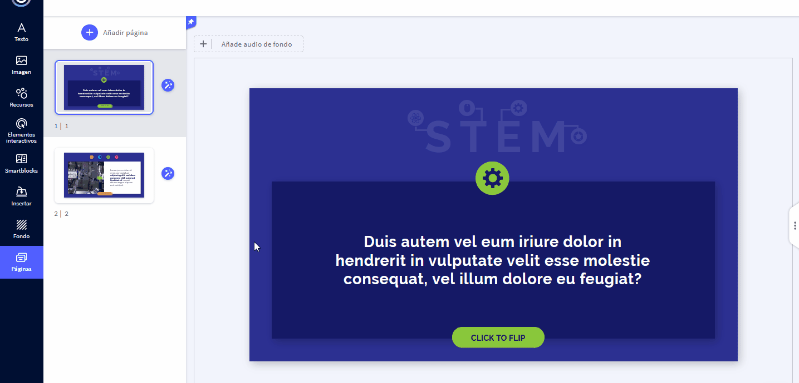

Insertando Elementos en Genially
Insertar Audio desde una URL
Contenido
Si posee un plan Free o Estudiante, sólo podremos insertar audios en tu creación mediante esta opción. Para lograrlo, sigue estos sencillos pasos:
1. Entra al Editor y haz clic en la sección Insertar, situada en la barra lateral izquierda.
2. Después haz clic en la pestaña Audio y pega el enlace de tu archivo de audio en el apartado URL.
3. Una vez haya cargado el audio en Genially, da clic sobre éste para ubicarlo en el lienzo. Inmediatamente se abrirá el menú para configurarlo.

Obra publicada con Licencia Creative Commons Reconocimiento Compartir igual 4.0